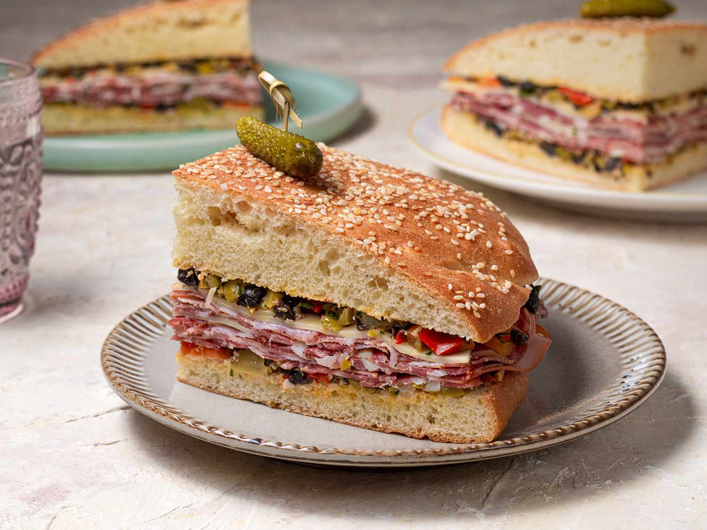

Muffuletta

The muffuletta, the classic New Orleans sandwich, is surprisingly easy to make at home. This muffuletta recipe — complete with flavorful cold cuts, sliced cheese, and homemade olive spread — is authentically delicious.
Ingredients
- 2 (1 pound) loaves Italian bread
- 8 ounces thinly sliced Genoa salami
- 8 ounces thinly sliced cooked ham
- 8 ounces sliced mortadella
- 8 ounces sliced mozzarella cheese
- 8 ounces sliced provolone cheese
Steps
- To make the olive salad: Roughly chop together green olives, Kalamata olives, pepperoncini, cauliflower, cocktail onions, garlic, capers, celery, and carrot.
- Combine with oregano, basil, black pepper, and celery seed in a medium bowl. Add in olive oil, canola oil, and vinegar. Mix together and transfer the mixture into a glass jar (or other nonreactive container). Pour in more oil to cover if needed.
- Cover jar or container and refrigerate at least 8 hours to overnight.
- To make the sandwiches: Cut loaves of bread in half horizontally; hollow out some of the excess bread to make room for filling.
- Spread each piece of bread with equal amounts of the olive salad, including oil.
- Layer bottom half of each loaf with 1/2 of the salami, ham, mortadella, mozzarella, and Provolone slices.
- Replace top half on each loaf and cut the sandwiches into quarters.
- Serve immediately, or wrap tightly and refrigerate for a few hours; this will allow for the flavors to mingle and the olive salad to soak into the bread.